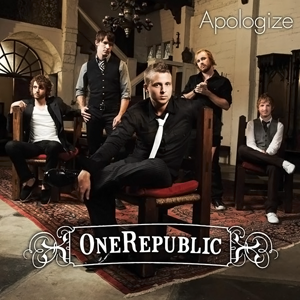
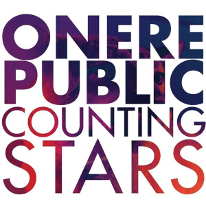

The Vietnamese German University
Department of English
Foundation Year
English for Computer Science
OneRepublic

Biography
Featuring the anthemic songwriting of Ryan Tedder, OneRepublic rose to prominence in 2007, when "Apologize" began its reign as the most popular digital download in American history.
Although the song proved to be a quick success, OneRepublic had spent five years touring the musical minor leagues before its release, with Tedder splitting his time between the band's work and production gigs for other artists.
Tedder and Zach Filkins formed the band in 2002 and relocated to Los Angeles shortly thereafter, adding keyboardist Drew Brown, bassist/cellist Brent Kutzle, and drummer Eddie Fisher to the lineup in the process.
OneRepublic then signed with Sony BMG's Columbia label in 2003; three years later, however, the bandmates returned from a performance at Coachella to find themselves dropped from Columbia's roster.
Nevertheless, OneRepublic's popularity continued to soar on MySpace, and Tedder helped raise the group's profile by penning songs for artists like Blake Lewis and Hilary Duff.
Hip-hop producer Timbaland (with whom Tedder had already worked for several years) took notice of the group's audience and signed OneRepublic to his own Mosley Music Group, a joint venture with Interscope Records.
Timbaland also remixed one of the group's most promising tracks, "Apologize," and included it on his own album, 2007's Timbaland Presents Shock Value.
The song quickly became a platinum-selling single in many countries, breaking airplay records in the U.K. and selling an unprecedented 4.3 million digital downloads in America alone.
Later that year, OneRepublic stepped out on their own with Dreaming Out Loud, a debut album filled with piano-fueled songwriting and pop/rock melodies.
The album quickly went gold, and "Apologize" continued to top the singles charts in multiple countries.
Another Tedder-penned track, Leona Lewis' "Bleeding Love," experienced similar success at the same time, thus making Tedder one of the year's most celebrated songwriters.
OneRepublic began writing songs for a second album in 2008, and the group later decamped to Colorado Springs to avoid outside distractions.
Although initially planned for a summer release, Waking Up wasn't completed until September 2009.
"All the Right Moves," the album's lead single, was released to radio that same month, while the entire album followed in November.
In 2013, OneRepublic returned with their third studio album, Native, featuring the singles "Feel Again," "If I Lose Myself," and their biggest hit to date, "Counting Stars."
During the group's subsequent extensive world tour, a deluxe version of Native was released, featuring the hit "Love Runs Out," which reached number 15 on the Hot 100 and was a Top Ten hit in several other countries.
As touring continued, the band began recording its follow-up album.
Written in 16 cities across 12 countries, Oh My My captured the sound and flavor of locales like Turkey, Brazil, Spain, and Russia, and was released in late 2016. ~ Andrew Leahey, Rovi
OneRepublic (2016). Billboard Retrived 5 December 2016 from here
"Secrets"
I need another story
Something to get off my chest
My life gets kinda boring
Need something that I can confess
'Til all my sleeves are stained red
From all the truth that I've said
Come by it honestly I swear
Thought you saw me wink, no
I've been on the brink, so
Tell me what you want to hear
Something that will light those ears
Sick of all the insincere
So I'm gonna give all my secrets away
This time don't need another perfect lie
Don't care if critics ever jump in line
I'm gonna give all my secrets away
My God, amazing how we got this far
It's like we're chasing all those stars
Who's driving shiny big black cars
And everyday I see the news
All the problems that we could solve
And when a situation rises
Just write it into an album
Send it straight to gold
But I don't really like my flow, no, so
Tell me what you want to hear
Something that will light those ears
Sick of all the insincere
So I'm gonna give all my secrets away
This time, don't need another perfect lie
Don't care if critics ever jump in line
I'm gonna give all my secrets away
Oh, got no reason, got no shame
Got no family I can blame
Just don't let me disappear
I'ma tell you everything
So tell me what you want to hear
Something that will light those ears
Sick of all the insincere
So I'm gonna give all my secrets away
This time, don't need another perfect lie
Don't care if critics ever jump in line
I'm gonna give all my secrets away
So tell me what you want to hear
Something that will light those ears
Sick of all the insincere
So I'm gonna give all my secrets away
This time, don't need another perfect lie
Don't care if critics ever jump in line
I'm gonna give all my secrets away
All my secrets away, all my secrets away
Secrets (2009). Waking Up. Retrived 5 December 2016 from here
Back to top page
Back to home page
"Apologize"

Apologize (2007). Shock Value. Retrived 5 December 2016 from here
I'm holding on your rope, got me ten feet off the ground
And I'm hearing what you say, but I just can't make a sound
You tell me that you need me then you go and cut me down, but wait
You tell me that you're sorry, didn't think I'd turn around, and say (that)
"It's too late to apologize (it's too late)."
I said, "It's too late to apologize (it's too late)."
I'd take another chance, take a fall, take a shot for you
And I need you like a heart needs a beat, but it's nothin' new (yeah)
I loved you with a fire red, now it's turning blue, and you say,
"Sorry," like the angel heaven let me think was you, but I'm afraid...
"It's too late to apologize (it's too late)."
I said, "It's too late to apologize (it's too late)."
"It's too late to apologize (it's too late)."
I said, "It's too late to apologize (it's too late)."
I said, "It's too late to apologize," yeah (too late)
I said, "It's too late to apologize," yeah (too late)
I'm holdin' on your rope, got me ten feet off the ground
Back to top page
Back to home page
"Counting Stars"

Lately I've been, I've been losing sleep
Dreaming about the things that we could be
But, baby I've been, I've been praying hard
Said no more counting dollars, we'll be counting stars
Yeah, we'll be counting stars
I see this life like a swinging vine,
Swing my heart across the line
In my face is flashing signs,
Seek it out and ye shall find.
Old but I'm not that old
Young but I'm not that bold
And I don't think the world is sold
I'm just doing what we're told
I I I I feel something so right by doing the wrong thing
And I I I I feel something so wrong by doing the right thing
I could lie, couldn't I, couldn't I?
Every thing that kills me makes me feel alive.
Lately I've been, I've been losing sleep
Dreaming about the things that we could be
Baby I've been, I've been praying hard
Said no more counting dollars, we'll be counting stars
Lately I've been, I've been losing sleep
Dreaming about the things that we could be
But, baby I've been, I've been praying hard
Said no more counting dollars, we'll be-we'll be counting stars
Ye-e-yeah
I feel her love
And I feel it burn down this river every time
Hope is our four-letter word, make that money watch it burn
Old but, I'm not that old
Young, but I'm not that bold
And I don't think the world is sold
I'm just doing what we're told
And I I I I feel something so wrong by doing the right thing
I could lie, couldn't I, couldn't I?
Everything that drowns me makes me wanna fly
Lately I've been, I've been losing sleep
Dreaming about the things that we could be
Baby I've been, I've been praying hard
Said no more counting dollars, we'll be counting stars
Lately I've been, I've been losing sleep
Dreaming about the things that we could be
But, baby I've been, I've been praying hard
Said no more counting dollars, we'll be-we'll be counting stars
Oh, take that money watch it burn,
Sing in the river the lessons I learned
Take that money watch it burn,
Sing in the river the lessons I learned
Take that money watch it burn,
Sing in the river the lessons I learned
Take that money watch it burn,
Sing in the river the lessons I learned
Everything that kills me makes me feel alive
Lately I've been, I've been losing sleep
Dreaming about the things that we could be
Baby I've been, I've been praying hard
Said no more counting dollars, we'll be counting stars
Lately I've been, I've been losing sleep
Dreaming about the things that we could be
But, baby I've been, I've been praying hard
Said no more counting dollars, we'll be-we'll be counting stars
Take that money watch it burn,
Sing in the river the lessons I learned
Take that money watch it burn,
Sing in the river the lessons I learned
Take that money watch it burn,
Sing in the river the lessons I learned
Take that money watch it burn,
Sing in the river the lessons I learned
Counting Stars (2013). Native. Retrived 5 December 2016 from here
Back to top page
Back to home page
{kind=link}
{kind=link}
{kind=link}